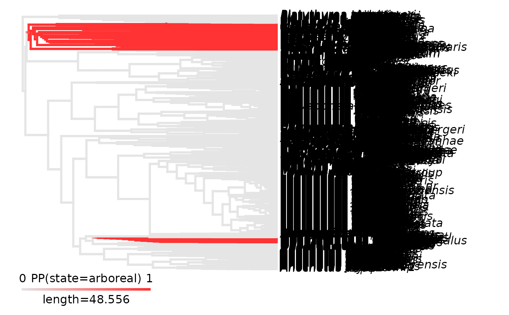
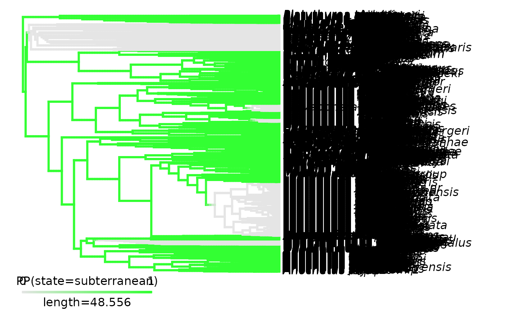
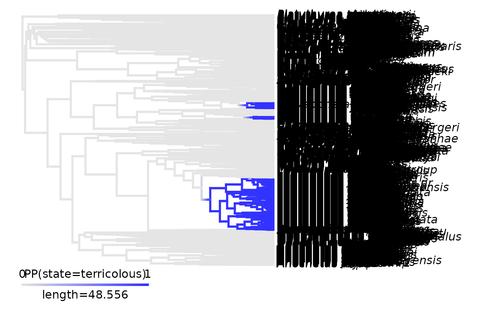
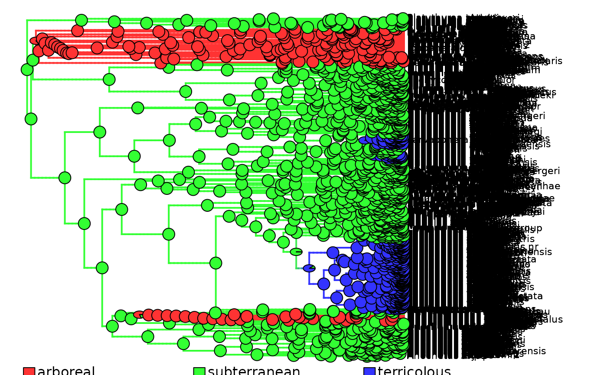

Convert simmaps into densityMaps suitable for deepSTRAPP
Source:R/convert_simmaps_to_densityMaps.R
convert_simmaps_to_densityMaps.RdConvert simmaps representing independent simulations of evolutionary history
into a densityMaps object suitable to use as input for a deepSTRAPP run.
simmaps are mapping discrete character/geographic evolutionary history as
transitions in character states/geographic ranges across nodes and branches of a phylogeny.
densityMaps are recording the posterior probability/frequencies of being in a given state/range along branches.
In deepSTRAPP format, densityMaps is a list of objects of class "densityMap" where each object corresponds to
the frequency of presence/absence of a state/range.
Usage
convert_simmaps_to_densityMaps(
simmaps,
colors_per_levels = NULL,
tol = 1e-05,
verbose = TRUE
)Arguments
- simmaps
List of objects of class
"simmap", typically generated withprepare_trait_data()orphytools::make.simmap(), that represent discrete character/geographic evolutionary history (i.e., transitions in character states/geographic ranges) mapped along branches.- colors_per_levels
Named character string. To set the colors to use to map each state/range posterior probabilities. Names = states/ranges; values = colors. If
NULL(default), therainbow()color scale will be used.- tol
Positive numeric. To set the tolerance used to match node ages and time steps (i.e., consider them equal). Default = 1e-5.
- verbose
Logical. Whether to display progress every 100 edges. Default =
TRUE.
Value
The function returns a densityMaps as a list of objects of class "densityMap",
where each object is mapping the frequency of presence/absence of a state/range.
The number of objects depends on the number of states/ranges observed across the simmaps provided for conversion.
Each densityMap is named as "Density_map_X" with X being each of the state/range recorded across the simmaps.
Each densityMap is a list of three elements:
$treeList of classes"simmap"and"phylo"that contains the phylogeny in ape format and the mapping of states/ranges frequencies along branches in$tree$maps.$colsNamed character strings. Colors mapped to the 0 to 1000 scale used to record frequencies in$tree$maps.$statesCharacter string with two values. First entry is the absence of the state/range recorded as "Not X". Second entry is the presence of the state/range recorded as "X", X being the state/range name.
Details
The function is a wrapper of the original phytools::densityMap() by Liam Revell.
However, it does not produce a single densityMap for binary states,
but rather can handle simmaps mapping any number of states/ranges, and produce a densityMaps list
that summarizes the frequency of presence/absence of each state/range in subsequent densityMap objects.
Both simmaps and densityMaps objects can be used as inputs for a deepSTRAPP run
with run_deepSTRAPP_for_focal_time() or run_deepSTRAPP_over_time().
simmaps retain the identity of each simulated history,
allowing deepSTRAPP to keep track of which simulation generated each set of trait values (i.e., states/ranges).
However, retaining all simulated histories can require substantial RAM, particularly for large phylogenies or many simulations.
Alternatively, densityMaps summarize the frequency of states/ranges across simulations.
They require substantially less RAM and can be used to visualize the overall uncertainty
in trait evolution with plot_densityMaps_overlay().
The trade-off is that densityMaps discard the identity of individual simulations and
therefore cannot be used to track which simulated history generated a given set of trait values.
Examples
## Load data
# Load trait df
data(Ponerinae_trait_tip_data, package = "deepSTRAPP")
# Load phylogeny
data(Ponerinae_tree_old_calib, package = "deepSTRAPP")
# Extract categorical data with 3-levels
Ponerinae_cat_3lvl_tip_data <- setNames(object = Ponerinae_trait_tip_data$fake_cat_3lvl_tip_data,
nm = Ponerinae_trait_tip_data$Taxa)
table(Ponerinae_cat_3lvl_tip_data)
#> Ponerinae_cat_3lvl_tip_data
#> arboreal subterranean terricolous
#> 193 953 388
# Select color scheme for states
colors_per_states <- c("forestgreen", "sienna", "goldenrod")
names(colors_per_states) <- c("arboreal", "subterranean", "terricolous")
# (May take several minutes to run)
## Produce densityMaps using stochastic character mapping based on an ER Mk model
Ponerinae_cat_3lvl_data_old_calib <- prepare_trait_data(
tip_data = Ponerinae_cat_3lvl_tip_data,
phylo = Ponerinae_tree_old_calib,
trait_data_type = "categorical",
colors_per_levels = colors_per_states,
evolutionary_models = "ER", # Use ER model
run_stochastic_maps = TRUE,
nb_simulations = 100, # Reduce number of simulations to save time
seed = 1234, # Set seed for reproducibility
return_simmaps = TRUE, # Return simmaps in the output
plot_map = FALSE)
#> Warning: Entries in 'tip_data' were reordered to match 'phylo$tip.label.
#>
#> 2026-09-09 06:22:17.95534 - Fit 1 evolutionary model(s): ER.
#>
#> ------ ER model ------
#>
#> GEIGER-fitted comparative model of discrete data
#> fitted Q matrix:
#> arboreal subterranean terricolous
#> arboreal -0.0002508455 0.0001254228 0.0001254228
#> subterranean 0.0001254228 -0.0002508455 0.0001254228
#> terricolous 0.0001254228 0.0001254228 -0.0002508455
#>
#> model summary:
#> log-likelihood = -45.665085
#> AIC = 93.330171
#> AICc = 93.332782
#> free parameters = 1
#>
#> Convergence diagnostics:
#> optimization iterations = 100
#> failed iterations = 0
#> number of iterations with same best fit = 100
#> frequency of best fit = 1.000
#>
#> object summary:
#> 'lik' -- likelihood function
#> 'bnd' -- bounds for likelihood search
#> 'res' -- optimization iteration summary
#> 'opt' -- maximum likelihood parameter estimates
#>
#> 2026-09-09 06:22:23.36256 - Compare model fits.
#>
#> model logL k AIC AICc delta_AICc Akaike_weights rank
#> ER ER -45.66509 1 93.33017 93.33278 0 100 1
#> 2026-09-09 06:22:23.363832 - Run simulations for stochastic mapping.
#>
#> make.simmap is sampling character histories conditioned on
#> the transition matrix
#>
#> Q =
#> arboreal subterranean terricolous
#> arboreal -0.0002508455 0.0001254228 0.0001254228
#> subterranean 0.0001254228 -0.0002508455 0.0001254228
#> terricolous 0.0001254228 0.0001254228 -0.0002508455
#> (specified by the user);
#> and (mean) root node prior probabilities
#> pi =
#> arboreal subterranean terricolous
#> 0.3333333 0.3333333 0.3333333
#> Done.
#> 2026-09-09 06:24:47.121278 - Extract ACE as posterior sampling from stochastic mapping.
#> 2026-09-09 06:24:50.594928 - Create densityMaps by summarizing simulations of evolutionary history (simmaps).
#>
#> 2026-09-09 06:24:54.442736 - Posterior probability computed for edge n°100/3066
#> 2026-09-09 06:24:55.545341 - Posterior probability computed for edge n°200/3066
#> 2026-09-09 06:24:56.847496 - Posterior probability computed for edge n°300/3066
#> 2026-09-09 06:24:59.249116 - Posterior probability computed for edge n°400/3066
#> 2026-09-09 06:25:00.150413 - Posterior probability computed for edge n°500/3066
#> 2026-09-09 06:25:01.004982 - Posterior probability computed for edge n°600/3066
#> 2026-09-09 06:25:01.447665 - Posterior probability computed for edge n°700/3066
#> 2026-09-09 06:25:01.796434 - Posterior probability computed for edge n°800/3066
#> 2026-09-09 06:25:02.18449 - Posterior probability computed for edge n°900/3066
#> 2026-09-09 06:25:02.591647 - Posterior probability computed for edge n°1000/3066
#> 2026-09-09 06:25:02.987411 - Posterior probability computed for edge n°1100/3066
#> 2026-09-09 06:25:03.702836 - Posterior probability computed for edge n°1200/3066
#> 2026-09-09 06:25:04.401879 - Posterior probability computed for edge n°1300/3066
#> 2026-09-09 06:25:05.503421 - Posterior probability computed for edge n°1400/3066
#> 2026-09-09 06:25:06.217278 - Posterior probability computed for edge n°1500/3066
#> 2026-09-09 06:25:07.508386 - Posterior probability computed for edge n°1600/3066
#> 2026-09-09 06:25:08.693933 - Posterior probability computed for edge n°1700/3066
#> 2026-09-09 06:25:09.571293 - Posterior probability computed for edge n°1800/3066
#> 2026-09-09 06:25:10.292948 - Posterior probability computed for edge n°1900/3066
#> 2026-09-09 06:25:10.862317 - Posterior probability computed for edge n°2000/3066
#> 2026-09-09 06:25:11.625241 - Posterior probability computed for edge n°2100/3066
#> 2026-09-09 06:25:12.525679 - Posterior probability computed for edge n°2200/3066
#> 2026-09-09 06:25:13.622062 - Posterior probability computed for edge n°2300/3066
#> 2026-09-09 06:25:14.386378 - Posterior probability computed for edge n°2400/3066
#> 2026-09-09 06:25:15.095771 - Posterior probability computed for edge n°2500/3066
#> 2026-09-09 06:25:15.983648 - Posterior probability computed for edge n°2600/3066
#> 2026-09-09 06:25:17.269421 - Posterior probability computed for edge n°2700/3066
#> 2026-09-09 06:25:19.264274 - Posterior probability computed for edge n°2800/3066
#> 2026-09-09 06:25:21.536696 - Posterior probability computed for edge n°2900/3066
#> 2026-09-09 06:25:23.49744 - Posterior probability computed for edge n°3000/3066
#> 2026-09-09 06:25:24.736314 - Posterior probabilities computed for State = arboreal - n°1/3
#> 2026-09-09 06:25:28.037541 - Posterior probability computed for edge n°100/3066
#> 2026-09-09 06:25:28.998056 - Posterior probability computed for edge n°200/3066
#> 2026-09-09 06:25:30.143462 - Posterior probability computed for edge n°300/3066
#> 2026-09-09 06:25:32.367967 - Posterior probability computed for edge n°400/3066
#> 2026-09-09 06:25:33.158823 - Posterior probability computed for edge n°500/3066
#> 2026-09-09 06:25:33.485499 - Posterior probability computed for edge n°600/3066
#> 2026-09-09 06:25:33.910708 - Posterior probability computed for edge n°700/3066
#> 2026-09-09 06:25:34.262697 - Posterior probability computed for edge n°800/3066
#> 2026-09-09 06:25:34.655905 - Posterior probability computed for edge n°900/3066
#> 2026-09-09 06:25:35.064388 - Posterior probability computed for edge n°1000/3066
#> 2026-09-09 06:25:35.480242 - Posterior probability computed for edge n°1100/3066
#> 2026-09-09 06:25:36.204465 - Posterior probability computed for edge n°1200/3066
#> 2026-09-09 06:25:36.917362 - Posterior probability computed for edge n°1300/3066
#> 2026-09-09 06:25:38.04568 - Posterior probability computed for edge n°1400/3066
#> 2026-09-09 06:25:38.765474 - Posterior probability computed for edge n°1500/3066
#> 2026-09-09 06:25:40.058112 - Posterior probability computed for edge n°1600/3066
#> 2026-09-09 06:25:41.274224 - Posterior probability computed for edge n°1700/3066
#> 2026-09-09 06:25:42.160695 - Posterior probability computed for edge n°1800/3066
#> 2026-09-09 06:25:42.857367 - Posterior probability computed for edge n°1900/3066
#> 2026-09-09 06:25:43.447122 - Posterior probability computed for edge n°2000/3066
#> 2026-09-09 06:25:44.761792 - Posterior probability computed for edge n°2100/3066
#> 2026-09-09 06:25:45.638002 - Posterior probability computed for edge n°2200/3066
#> 2026-09-09 06:25:46.704732 - Posterior probability computed for edge n°2300/3066
#> 2026-09-09 06:25:47.444966 - Posterior probability computed for edge n°2400/3066
#> 2026-09-09 06:25:48.144144 - Posterior probability computed for edge n°2500/3066
#> 2026-09-09 06:25:49.000883 - Posterior probability computed for edge n°2600/3066
#> 2026-09-09 06:25:50.231075 - Posterior probability computed for edge n°2700/3066
#> 2026-09-09 06:25:52.169621 - Posterior probability computed for edge n°2800/3066
#> 2026-09-09 06:25:54.387318 - Posterior probability computed for edge n°2900/3066
#> 2026-09-09 06:25:56.287327 - Posterior probability computed for edge n°3000/3066
#> 2026-09-09 06:25:57.505877 - Posterior probabilities computed for State = subterranean - n°2/3
#> 2026-09-09 06:26:00.928385 - Posterior probability computed for edge n°100/3066
#> 2026-09-09 06:26:01.914124 - Posterior probability computed for edge n°200/3066
#> 2026-09-09 06:26:03.070909 - Posterior probability computed for edge n°300/3066
#> 2026-09-09 06:26:05.207904 - Posterior probability computed for edge n°400/3066
#> 2026-09-09 06:26:06.059909 - Posterior probability computed for edge n°500/3066
#> 2026-09-09 06:26:06.387191 - Posterior probability computed for edge n°600/3066
#> 2026-09-09 06:26:06.801714 - Posterior probability computed for edge n°700/3066
#> 2026-09-09 06:26:07.151248 - Posterior probability computed for edge n°800/3066
#> 2026-09-09 06:26:07.558443 - Posterior probability computed for edge n°900/3066
#> 2026-09-09 06:26:07.992975 - Posterior probability computed for edge n°1000/3066
#> 2026-09-09 06:26:08.401817 - Posterior probability computed for edge n°1100/3066
#> 2026-09-09 06:26:09.148793 - Posterior probability computed for edge n°1200/3066
#> 2026-09-09 06:26:09.893247 - Posterior probability computed for edge n°1300/3066
#> 2026-09-09 06:26:11.029032 - Posterior probability computed for edge n°1400/3066
#> 2026-09-09 06:26:11.774431 - Posterior probability computed for edge n°1500/3066
#> 2026-09-09 06:26:13.085291 - Posterior probability computed for edge n°1600/3066
#> 2026-09-09 06:26:14.311024 - Posterior probability computed for edge n°1700/3066
#> 2026-09-09 06:26:15.204442 - Posterior probability computed for edge n°1800/3066
#> 2026-09-09 06:26:15.922299 - Posterior probability computed for edge n°1900/3066
#> 2026-09-09 06:26:16.521714 - Posterior probability computed for edge n°2000/3066
#> 2026-09-09 06:26:17.313239 - Posterior probability computed for edge n°2100/3066
#> 2026-09-09 06:26:18.24438 - Posterior probability computed for edge n°2200/3066
#> 2026-09-09 06:26:19.407202 - Posterior probability computed for edge n°2300/3066
#> 2026-09-09 06:26:20.21121 - Posterior probability computed for edge n°2400/3066
#> 2026-09-09 06:26:20.952753 - Posterior probability computed for edge n°2500/3066
#> 2026-09-09 06:26:21.867217 - Posterior probability computed for edge n°2600/3066
#> 2026-09-09 06:26:23.210202 - Posterior probability computed for edge n°2700/3066
#> 2026-09-09 06:26:25.847637 - Posterior probability computed for edge n°2800/3066
#> 2026-09-09 06:26:28.107108 - Posterior probability computed for edge n°2900/3066
#> 2026-09-09 06:26:30.04978 - Posterior probability computed for edge n°3000/3066
#> 2026-09-09 06:26:31.248571 - Posterior probabilities computed for State = terricolous - n°3/3
# Note that densityMaps are already produced by the [deepSTRAPP::prepare_trait_data()] function,
# but for the sake of example, we can convert the simmaps stored in the output into densityMaps,
# using [deepSTRAPP::convert_simmaps_to_densityMaps()].
## Convert simmaps to densityMaps as input format for deepSTRAPP
Ponerinae_densityMaps <- convert_simmaps_to_densityMaps(
simmaps = Ponerinae_cat_3lvl_data_old_calib$simmaps)
#> 2026-09-09 06:26:34.762697 - Posterior probability computed for edge n°100/3066
#> 2026-09-09 06:26:35.7004 - Posterior probability computed for edge n°200/3066
#> 2026-09-09 06:26:36.838757 - Posterior probability computed for edge n°300/3066
#> 2026-09-09 06:26:38.943011 - Posterior probability computed for edge n°400/3066
#> 2026-09-09 06:26:39.770394 - Posterior probability computed for edge n°500/3066
#> 2026-09-09 06:26:40.098052 - Posterior probability computed for edge n°600/3066
#> 2026-09-09 06:26:40.51198 - Posterior probability computed for edge n°700/3066
#> 2026-09-09 06:26:40.859433 - Posterior probability computed for edge n°800/3066
#> 2026-09-09 06:26:41.268654 - Posterior probability computed for edge n°900/3066
#> 2026-09-09 06:26:41.675541 - Posterior probability computed for edge n°1000/3066
#> 2026-09-09 06:26:42.073883 - Posterior probability computed for edge n°1100/3066
#> 2026-09-09 06:26:42.825754 - Posterior probability computed for edge n°1200/3066
#> 2026-09-09 06:26:43.540812 - Posterior probability computed for edge n°1300/3066
#> 2026-09-09 06:26:44.663257 - Posterior probability computed for edge n°1400/3066
#> 2026-09-09 06:26:45.388336 - Posterior probability computed for edge n°1500/3066
#> 2026-09-09 06:26:46.679605 - Posterior probability computed for edge n°1600/3066
#> 2026-09-09 06:26:47.897696 - Posterior probability computed for edge n°1700/3066
#> 2026-09-09 06:26:48.782404 - Posterior probability computed for edge n°1800/3066
#> 2026-09-09 06:26:49.494609 - Posterior probability computed for edge n°1900/3066
#> 2026-09-09 06:26:50.088292 - Posterior probability computed for edge n°2000/3066
#> 2026-09-09 06:26:50.882606 - Posterior probability computed for edge n°2100/3066
#> 2026-09-09 06:26:51.800226 - Posterior probability computed for edge n°2200/3066
#> 2026-09-09 06:26:52.963139 - Posterior probability computed for edge n°2300/3066
#> 2026-09-09 06:26:53.763873 - Posterior probability computed for edge n°2400/3066
#> 2026-09-09 06:26:54.506925 - Posterior probability computed for edge n°2500/3066
#> 2026-09-09 06:26:55.41493 - Posterior probability computed for edge n°2600/3066
#> 2026-09-09 06:26:56.71093 - Posterior probability computed for edge n°2700/3066
#> 2026-09-09 06:26:58.757992 - Posterior probability computed for edge n°2800/3066
#> 2026-09-09 06:27:01.108657 - Posterior probability computed for edge n°2900/3066
#> 2026-09-09 06:27:03.153617 - Posterior probability computed for edge n°3000/3066
#> 2026-09-09 06:27:05.02079 - Posterior probabilities computed for State = arboreal - n°1/3
#> 2026-09-09 06:27:08.370088 - Posterior probability computed for edge n°100/3066
#> 2026-09-09 06:27:09.334416 - Posterior probability computed for edge n°200/3066
#> 2026-09-09 06:27:10.492213 - Posterior probability computed for edge n°300/3066
#> 2026-09-09 06:27:12.728273 - Posterior probability computed for edge n°400/3066
#> 2026-09-09 06:27:13.528021 - Posterior probability computed for edge n°500/3066
#> 2026-09-09 06:27:13.856134 - Posterior probability computed for edge n°600/3066
#> 2026-09-09 06:27:14.290664 - Posterior probability computed for edge n°700/3066
#> 2026-09-09 06:27:14.642278 - Posterior probability computed for edge n°800/3066
#> 2026-09-09 06:27:15.051797 - Posterior probability computed for edge n°900/3066
#> 2026-09-09 06:27:15.482744 - Posterior probability computed for edge n°1000/3066
#> 2026-09-09 06:27:15.890813 - Posterior probability computed for edge n°1100/3066
#> 2026-09-09 06:27:16.61799 - Posterior probability computed for edge n°1200/3066
#> 2026-09-09 06:27:17.348785 - Posterior probability computed for edge n°1300/3066
#> 2026-09-09 06:27:18.461392 - Posterior probability computed for edge n°1400/3066
#> 2026-09-09 06:27:19.21213 - Posterior probability computed for edge n°1500/3066
#> 2026-09-09 06:27:20.500918 - Posterior probability computed for edge n°1600/3066
#> 2026-09-09 06:27:21.71592 - Posterior probability computed for edge n°1700/3066
#> 2026-09-09 06:27:22.606609 - Posterior probability computed for edge n°1800/3066
#> 2026-09-09 06:27:23.321563 - Posterior probability computed for edge n°1900/3066
#> 2026-09-09 06:27:23.913618 - Posterior probability computed for edge n°2000/3066
#> 2026-09-09 06:27:24.692248 - Posterior probability computed for edge n°2100/3066
#> 2026-09-09 06:27:25.604762 - Posterior probability computed for edge n°2200/3066
#> 2026-09-09 06:27:26.745374 - Posterior probability computed for edge n°2300/3066
#> 2026-09-09 06:27:27.545118 - Posterior probability computed for edge n°2400/3066
#> 2026-09-09 06:27:28.279435 - Posterior probability computed for edge n°2500/3066
#> 2026-09-09 06:27:29.189851 - Posterior probability computed for edge n°2600/3066
#> 2026-09-09 06:27:30.511462 - Posterior probability computed for edge n°2700/3066
#> 2026-09-09 06:27:32.532906 - Posterior probability computed for edge n°2800/3066
#> 2026-09-09 06:27:34.856492 - Posterior probability computed for edge n°2900/3066
#> 2026-09-09 06:27:36.904163 - Posterior probability computed for edge n°3000/3066
#> 2026-09-09 06:27:38.163136 - Posterior probabilities computed for State = subterranean - n°2/3
#> 2026-09-09 06:27:41.776196 - Posterior probability computed for edge n°100/3066
#> 2026-09-09 06:27:43.45327 - Posterior probability computed for edge n°200/3066
#> 2026-09-09 06:27:44.513888 - Posterior probability computed for edge n°300/3066
#> 2026-09-09 06:27:46.465472 - Posterior probability computed for edge n°400/3066
#> 2026-09-09 06:27:47.217626 - Posterior probability computed for edge n°500/3066
#> 2026-09-09 06:27:47.528257 - Posterior probability computed for edge n°600/3066
#> 2026-09-09 06:27:47.922036 - Posterior probability computed for edge n°700/3066
#> 2026-09-09 06:27:48.254324 - Posterior probability computed for edge n°800/3066
#> 2026-09-09 06:27:48.642776 - Posterior probability computed for edge n°900/3066
#> 2026-09-09 06:27:49.044667 - Posterior probability computed for edge n°1000/3066
#> 2026-09-09 06:27:49.42382 - Posterior probability computed for edge n°1100/3066
#> 2026-09-09 06:27:50.112589 - Posterior probability computed for edge n°1200/3066
#> 2026-09-09 06:27:50.805549 - Posterior probability computed for edge n°1300/3066
#> 2026-09-09 06:27:51.859051 - Posterior probability computed for edge n°1400/3066
#> 2026-09-09 06:27:52.549237 - Posterior probability computed for edge n°1500/3066
#> 2026-09-09 06:27:53.752276 - Posterior probability computed for edge n°1600/3066
#> 2026-09-09 06:27:54.877471 - Posterior probability computed for edge n°1700/3066
#> 2026-09-09 06:27:55.701442 - Posterior probability computed for edge n°1800/3066
#> 2026-09-09 06:27:56.360146 - Posterior probability computed for edge n°1900/3066
#> 2026-09-09 06:27:56.919982 - Posterior probability computed for edge n°2000/3066
#> 2026-09-09 06:27:57.655328 - Posterior probability computed for edge n°2100/3066
#> 2026-09-09 06:27:58.515571 - Posterior probability computed for edge n°2200/3066
#> 2026-09-09 06:27:59.575353 - Posterior probability computed for edge n°2300/3066
#> 2026-09-09 06:28:00.304203 - Posterior probability computed for edge n°2400/3066
#> 2026-09-09 06:28:00.991587 - Posterior probability computed for edge n°2500/3066
#> 2026-09-09 06:28:01.833725 - Posterior probability computed for edge n°2600/3066
#> 2026-09-09 06:28:03.040802 - Posterior probability computed for edge n°2700/3066
#> 2026-09-09 06:28:04.938314 - Posterior probability computed for edge n°2800/3066
#> 2026-09-09 06:28:07.109334 - Posterior probability computed for edge n°2900/3066
#> 2026-09-09 06:28:09.001113 - Posterior probability computed for edge n°3000/3066
#> 2026-09-09 06:28:10.156002 - Posterior probabilities computed for State = terricolous - n°3/3
# Plot densityMaps one by one
plot(Ponerinae_densityMaps[[1]]) # densityMap for state n°1 ("arboreal")

plot(Ponerinae_densityMaps[[2]]) # densityMap for state n°1 ("subterranean")

plot(Ponerinae_densityMaps[[3]]) # densityMap for state n°1 ("terricolous")

# Plot overlay of all densityMaps
plot_densityMaps_overlay(densityMaps = Ponerinae_densityMaps)
